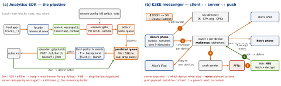

architecture · folio
In one line: Same steps, two very different centres of gravity: scope → functional → non-functional → data model → API → high-level → the hard parts. An SDK lives inside someone else’s app: it must never crash, block, bloat or leak it — the design is a persisted, batched, privacy-gated queue. An E2EE messenger’s server is an untrusted mailbox: keys live only on devices, every message is sealed per recipient device, and the push extension has to decrypt.
Download PDF Print view LaTeX source


(a) Analytics SDK — step by step
Scope events + screens + identify; not dashboards, not crash reporting. Who integrates:
other teams’ apps, iOS 15+.
Functional track, screen, identify(userId:traits:), reset() on logout,
flush(), opt-out. Non-functional never crash / block the host; ≈0 launch cost; small
binary; no data loss across kill/offline; bounded disk + battery; privacy by default; thread-safe.
Data model Event{messageId: UUID, name, properties, timestamp, context{app, os, device,
locale, sessionId}, schemaVersion}; anonymousId until identify.
sentAt added at upload → server corrects device-clock skew:
receivedAt - (sentAt - timestamp).
API one entry point, value types, no callbacks required:
public final class Analytics: Sendable {
public static func configure(writeKey: String, options: Options)
public func track(_ name: String, _ props: [String: Value] = [:])
public func identify(userId: String, traits: [String: Value])
public func setConsent(_ c: Consent) // gates collection
public func flush() // fire-and-forget
public func reset() // logout: new anonymousId
}Deep dives
Threading: public calls copy the event and hop to one actor / serial queue — never main,
never a lock the caller waits on. Persistence: append each event (or small batches) to a
file / SQLite so a kill loses ≤ one in-memory batch; cap bytes + age, drop oldest.
Flush: whichever first — N events (e.g. 20), T seconds (e.g. 30), app to background (inside
beginBackgroundTask), explicit flush(), next launch. One upload in flight. Retries:
exponential backoff + full jitter, capped; 5xx / 429 / offline = retry; a 4xx batch is poison —
drop it or it blocks the queue forever. Idempotent: messageId dedup server-side.
Sampling: decide per user/session with hash(id) % 100 < rate, not per event (keeps
funnels whole); send the rate so the server re-weights. Privacy: no collection before consent;
scrub PII (allow-list property keys, redact emails / phones), never IDFA without ATT; ship
PrivacyInfo.xcprivacy (data types + required-reason APIs such as UserDefaults) and sign
the binary. Size + startup: no heavy deps, nothing in +load / static initialisers, lazy
I/O after launch; static XCFramework via SPM binary target. Versioning: SemVer; library
evolution (BUILD_LIBRARY_FOR_DISTRIBUTION); deprecate with
@available(*, deprecated, renamed:); schemaVersion in the payload so the server accepts old
SDKs for years. Kill switch: remote config can stop sending. Testing: inject
Clock, Storage, Transport protocols; fake clock drives time-based flush; tests for kill
mid-write, offline, 400 vs 500, consent off.
Traps
- SDK: a
fatalError/ force-unwrap, sync disk I/O on the caller’s thread, or work at launch — you just degraded every host app. - SDK: retrying a 400 forever; in-memory-only queue (kill = data loss); per-event sampling.
- E2EE: keys in iCloud backup, or “the server encrypts it” (TLS ≠ E2EE).
- Curve25519 identity key “in the Secure Enclave” — SE keys are P-256 only; Keychain.
- Encrypting once per user, not per device — the iPad can’t read it.
- Plaintext in the APNs payload — Apple and logs see it; the NSE decrypts.
Trade-offs
| queue | append-only file: tiny, no deps · SQLite: queries, atomic batch delete |
| binary | static: no dyld cost at launch · dynamic: one copy shared with extensions |
| upload | URLSession + bg task: prompt · background session: survives a kill, delayed |
| groups | pairwise: N encryptions per send · sender keys: one, rekey when a member leaves |
| receipts | per message: simple · batched “read up to seq”: far fewer messages |
(b) E2EE messenger — step by step
Scope 1:1 + small groups, text + media, multi-device; not calls (own design), not backups.
Functional send / receive offline, delivery + read receipts, history on each device, push.
Non-functional server can’t read content; forward secrecy; ordering; works offline; low
battery; notification shows plaintext.
Data model Message{clientId, conversationId, senderDevice, serverSeq?, body, state:
sending|sent|delivered|read|failed}; Session per (user, device); Outbox row per
send. Envelope on the wire: {to: userId.deviceId, type, ciphertext} — the server routes blobs.
API PUT /keys (upload IK, signed prekey, 100 one-time prekeys) · GET /keys/{user}
→ bundle per device · POST /messages (envelopes for all recipient + own devices;
409 = device list stale) · WebSocket deliver/ack · GET /messages?since= catch-up.
Deep dives
Keys (Signal, conceptually): each device has a long-term identity key (IK), a
signed prekey (SPK, signed by IK, rotated) and one-time prekeys (OPK), published so a peer can
start a session while it is offline. X3DH: Alice combines DH(IKA, SPKB),
DH(EKA, IKB), DH(EKA, SPKB) [+ DH(EKA,
OPKB)] through a KDF → shared secret SK; her first message carries IKA,
EKA and which prekeys she used. (Signal now also specifies PQXDH, adding a
post-quantum KEM.) Double Ratchet: SK seeds a root chain; a symmetric ratchet
(KDF chain) gives every message its own key — delete after use = forward secrecy; a
DH ratchet step each time a new ratchet public key arrives = break-in recovery. Header
N / PN + stored skipped keys decrypt out-of-order messages. Trust: compare
safety numbers (IK fingerprints, QR); warn on key change.
Multi-device (Signal’s Sesame): a session per device; sender encrypts once per
recipient device and per own other device; stale devices kept briefly for late messages. Groups:
pairwise fan-out, or sender keys for big groups.
Ordering + sync: server assigns serverSeq per conversation on accept; client sorts by it,
pending rows last; per-device mailbox deleted on ack; since catch-up on reconnect.
Receipts: sent as encrypted control messages, batched; “read” is optional (privacy setting).
Push: payload carries no content — mutable-content:1 + generic alert; the NSE
fetches, decrypts with keys from a shared Keychain group (AfterFirstUnlockThisDeviceOnly) + App
Group DB, rewrites the alert; timeout shows the generic text. NSE and app both advance the ratchet
→ cross-process lock, or the session corrupts.
Attachments: random key per file, encrypt + MAC, upload ciphertext to a CDN, send
{url, key, digest} inside the E2EE message.
Remember
SDK = guest: fast, silent, persisted, consented. E2EE = mailbox server: keys on devices, a session per device, the NSE decrypts.